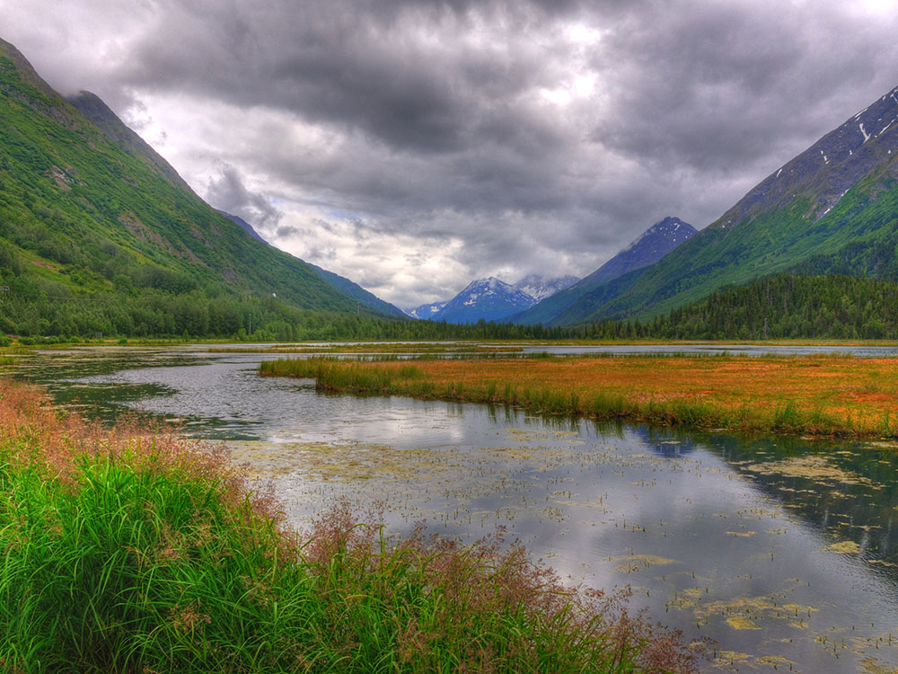
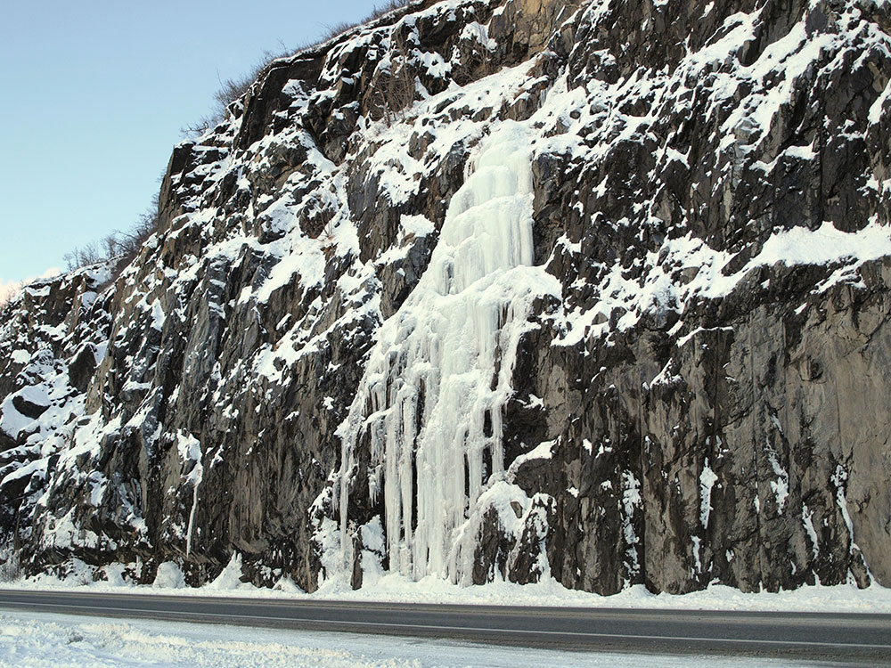
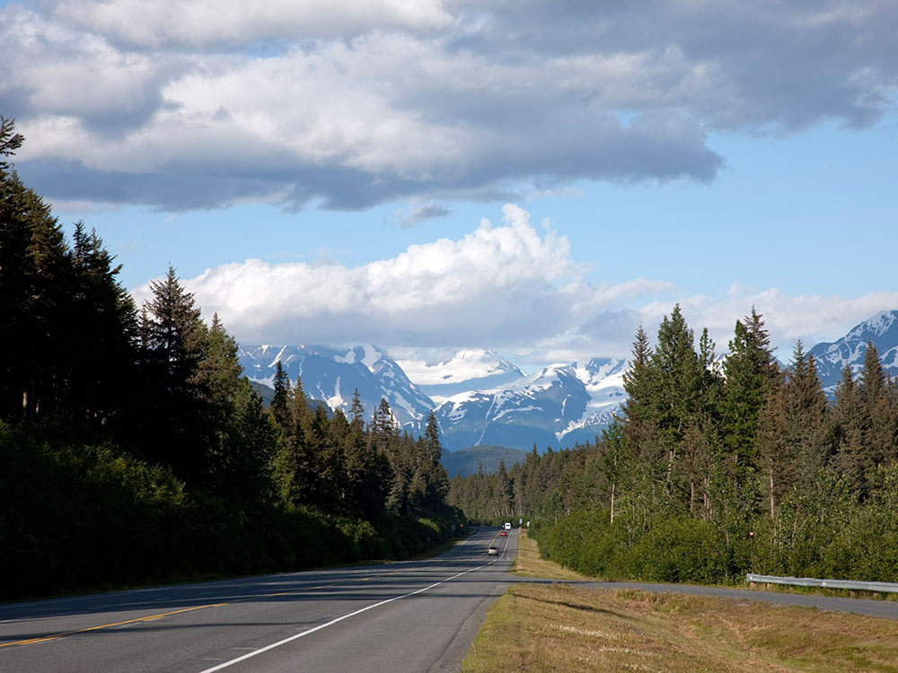
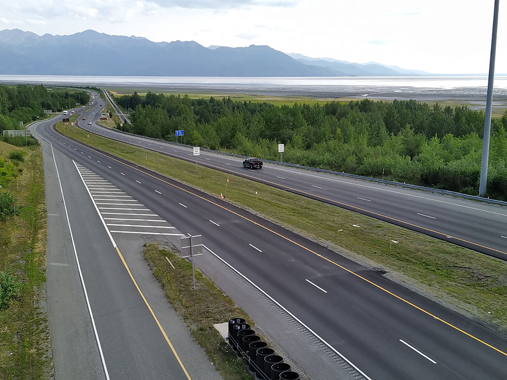
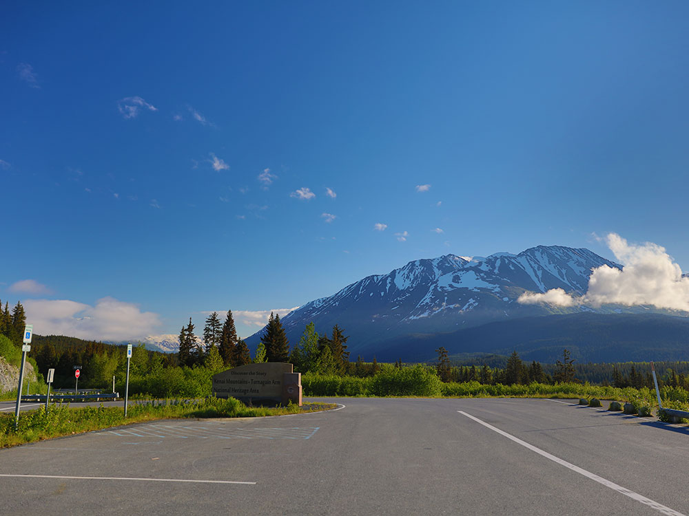
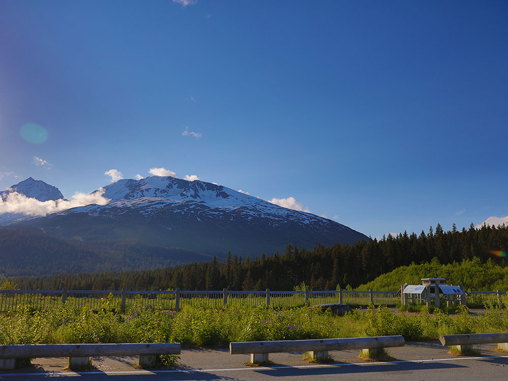

A nationally recognized scenic roadway stretching through mountains, forests, and coastal inlets with sweeping views of glaciers, wildlife, and dramatic alpine landscapes.
General Information
How to Get There
From Anchorage (0 mi): Start in the city and head south on AK-1/AK-9 as the route begins locally and continues along the coastline and through mountain terrain.
Overview
The Seward Highway is a 125-mile scenic road between Seward and Anchorage, completed in 1951, an All-American Road and one of the most beautiful drives in the U.S. It passes through Chugach National Forest, along Turnagain Arm with views of glaciers, whales, and mountains, past Girdwood, Portage, Turnagain Pass, and Moose Pass. The first 18 miles from Seward to Kenai Lake were done in 1923.
Highlights
- Turnagain Arm: Beluga Point, Bird Point, and the tidal bore
- Portage Valley: the glacier and the Wildlife Conservation Center
- Turnagain Pass and Summit Lake: high alpine stops
- Seward: Resurrection Bay and Kenai Fjords National Park
Things to Do
Drive One of North America's Most Scenic Roads
The Seward Highway stretches approximately 127 miles between Anchorage and Seward and is one of Alaska's most celebrated road trips. Designated as an Alaska Scenic Byway, National Forest Scenic Byway, and All-American Road, the route showcases dramatic mountain landscapes, coastal scenery, glaciers, rivers, and abundant wildlife.
Experience Turnagain Arm
One of the highway's most famous features is Turnagain Arm, a narrow tidal inlet bordered by the Chugach Mountains. Travelers can stop at numerous viewpoints to admire sweeping coastal scenery, watch for beluga whales, and witness the rare bore tide phenomenon that moves through the inlet during changing tides.
Visit Potter Marsh
Located just south of Anchorage, Potter Marsh is a popular wildlife viewing area known for its boardwalks, wetlands, and birdwatching opportunities. Visitors frequently observe waterfowl, swans, eagles, and other wildlife in this scenic habitat.
Explore Girdwood and Alyeska
The mountain community of Girdwood is a favorite stop along the Seward Highway. Visitors can enjoy hiking, tram rides, mountain scenery, local dining, and year-round outdoor recreation in the shadow of the Chugach Mountains.
Visit Portage Valley and Nearby Glaciers
Side trips from the highway provide access to Portage Valley, where visitors can enjoy glacier views, hiking trails, and opportunities to learn about Alaska's dynamic glacial landscapes.
Watch for Wildlife Along the Highway
The Seward Highway is known for excellent wildlife viewing opportunities. Travelers may encounter beluga whales, Dall sheep, bald eagles, moose, and other wildlife while driving through Turnagain Arm, Chugach National Forest, and the Kenai Peninsula.
Continue to Seward and Kenai Fjords National Park
At the southern end of the highway, visitors reach Seward, a gateway to Kenai Fjords National Park. Popular attractions include Exit Glacier, glacier cruises, wildlife tours, Mount Marathon, Resurrection Bay, and the Alaska SeaLife Center.
Top Trails
Johnson Pass Trail
Length: Approximately 23 miles one way
Elevation Gain: Moderate
Difficulty: Moderate to Strenuous
Following portions of the historic Iditarod Trail, Johnson Pass traverses forests, lakes, mountain valleys, and alpine scenery. It is one of the premier long-distance hiking routes accessible from the Seward Highway corridor.
Byron Glacier Trail
Length: Approximately 1.5 miles round trip
Elevation Gain: Minimal
Difficulty: Easy
Located near Portage Valley, this family-friendly trail leads through a glacial valley toward views of Byron Glacier, making it one of the area's most popular short hikes.
Winner Creek Trail
Length: Approximately 6 miles round trip
Elevation Gain: Moderate
Difficulty: Moderate
Near Girdwood, this scenic trail travels through old-growth forest, crosses streams, and provides access to beautiful mountain scenery within Chugach National Forest.
Exit Glacier Overlook Trail
Length: Approximately 1.2 miles round trip
Elevation Gain: Moderate
Difficulty: Easy to Moderate
Near the southern end of the Seward Highway in Kenai Fjords National Park, this trail offers excellent views of Exit Glacier and serves as an accessible introduction to Alaska's glacial landscapes.
This article uses material from the Wikipedia article and official pages for Alaska DOT - Seward Highway Scenic Byway, Driving the Seward Highway Alaska, Seward Highway, released under the Creative Commons Attribution-Share-Alike License 3.0.

.jpeg){kind=link}







